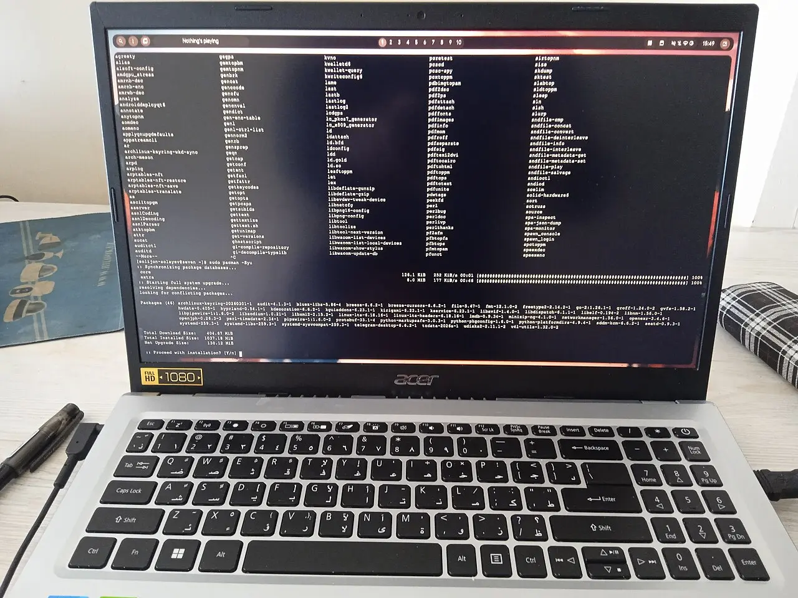
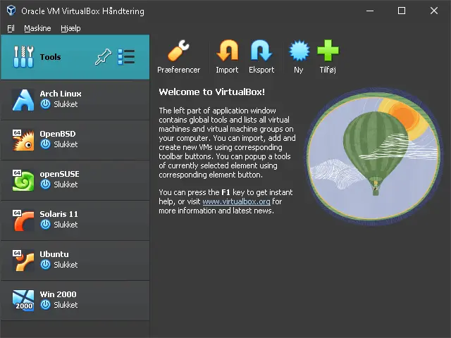
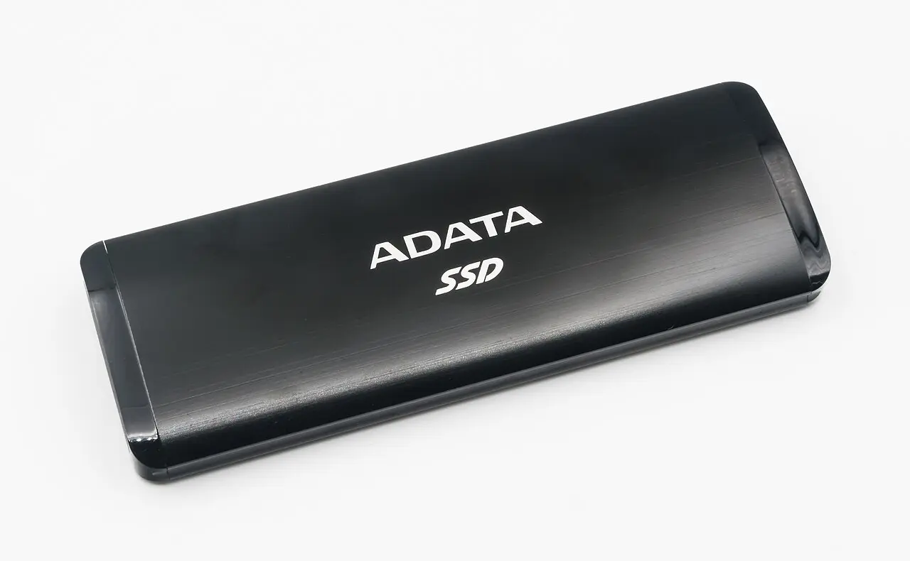
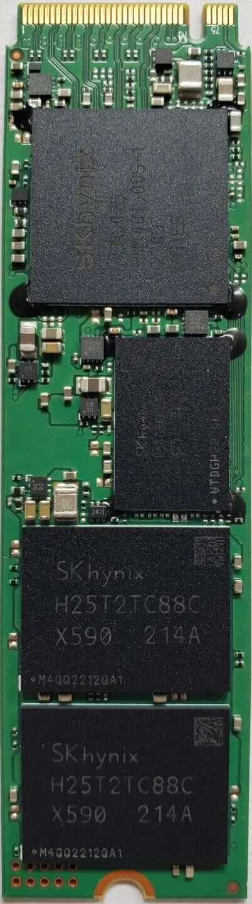
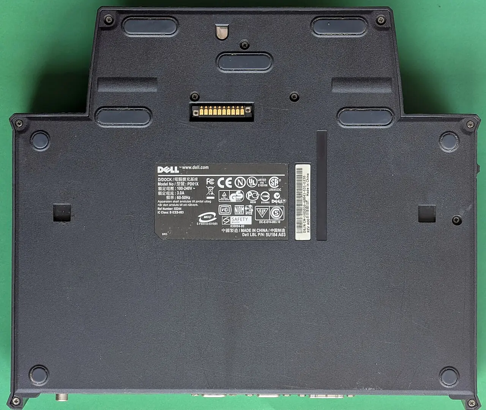

Seven rungs.
Three channels.
One of them passes.
Every “try Linux safely” option gets scored on the same three channels: does it prove your software survives, does it prove your hardware survives, and what does it cost to walk back. Six rungs score well on one channel and zero on another. One scores high on both and near-zero on retreat cost.

WSL2 → live USB → external SSD → daily-drive from the SSD → wipe and commit.
Skip the VM. Skip single-disk dual-boot entirely.
WSL2 and VMs answer only “does my software run” — they are structurally blind to suspend/resume, Wi-Fi, GPU, docking and battery, which is where switchers actually fail [1][2]. An external SSD install is the only rung that is simultaneously full-fidelity and zero-commitment — the ability to basically press delete, and the Linux system is gone
[3]. Single-disk dual-boot is the worst trade on the ladder: partition surgery, BitLocker risk and bootloader fragility [4][5], and it buys nothing an external disk doesn't.
The three channels every rung is scored on
Software fidelity
Does the toolchain and workflow survive — .NET SDK, Node/TS, Docker, editors, git, shell. Everything virtualised answers this at near-perfect fidelity.
Hardware fidelity
Does the machine and desktop survive — suspend/resume, Wi-Fi/Bluetooth, GPU and external monitors, docking, battery, scaling, the DE itself. The guest sees synthesised hardware, not yours.
Commitment cost
What retreat costs once you're on the rung. Lower is better — a full red bar means the Windows install is no longer where you left it.
Practitioners converge on exactly this split: I would strongly recommend playing around with Linux in a virtual machine first, then a spare machine if possible
— mikeymikec, AnandTech forums, Feb 2026 [6].
Rung-by-rung scorecard

WSL2
PROVES
The whole Linux userland dev loop: bash, apt, git, dotnet build/test, Node, Docker, systemd units [1].
WSLg even runs Linux GUI apps in Windows windows [13], and CUDA compute works — though NVIDIA still ships profilers as preview-only there [14].
STRUCTURALLY CANNOT TELL YOU
Anything hardware or desktop. Anything that involves kernel modules, low-level system configuration, or hardware access is either limited or outright blocked
[2].
No serial ports, USB only via usbipd, NAT networking hands the distro a fresh IP each restart, and /mnt/c crosses a network-style protocol [1]. Keep files on the ext4 side.
wsl --unregister — seconds. Nothing outside the distro is touched.
Live USB
PROVES
A real kernel on your silicon: whether Wi-Fi, trackpad, display, dock and printer enumerate at all. I put the live USB in…and it recognized everything. Wifi. Trackpad. Touchscreen. SD card reader. Brightness.
— notposting, Feb 2026 [6]
Test the list: Wi-Fi association, Bluetooth pair, external monitor over the dock, brightness keys, audio out + mic, webcam, trackpad gestures, lid close. Cross-check the model against Ubuntu Certified — certification runs 500+ compatibility tests per machine [15].
STRUCTURALLY CANNOT TELL YOU
Anything needing a driver install or a kernel update. Persistent live media chokes on initramfs regeneration, so proprietary NVIDIA modules can't be tested [7].
So GPU is stuck on nouveau in the live session
is not a no-go signal. Nor does one evening say anything about long-run stability, suspend, battery or updates.
doesn't alter your computer's configuration in any way[12].

Virtual machine
PROVES
A distro/DE taste-test, package-manager muscle memory, and .NET + TypeScript build/test/debug end-to-end.
STRUCTURALLY CANNOT TELL YOU
Same blind spots as WSL2 — plus it actively misleads on desktop feel. Judging Wayland, GNOME animations or “does it feel snappy” from inside a VM benchmarks a software rasteriser.
Real GPU passthrough needs a second GPU dedicated to the guest and cooperative IOMMU grouping [8].

External-SSD install
PROVES
Effectively everything: real drivers, real suspend, real docking, real battery, real update cycles over weeks. The Windows disk is untouched [9].
A documented 30-day switch found the pattern most people report: days 1–3 smooth, week 1 is the trough (printer drivers, Bluetooth audio latency, missing apps), then by week two… I stopped fighting Linux and started understanding it
[17]. Budget 4–8 weeks so you cross two kernel updates and one point-release.
STRUCTURALLY CANNOT TELL YOU
Only the USB-bus I/O ceiling, and — if external — that you're carrying a dongle. Nothing else material.
Practitioner floor is days, not the target: use it for at least a day or 2, a week if you have the time
— Zepp, Feb 2026 [6]. Real trials run longer.
The one trap that turns rung 3 irreversible
Installers happily write the bootloader to your internal ESP. Then unplugging the SSD doesn't undo anything — and worse, the EFI partition might be overwritten
[16].
Disable the internal drives in BIOS/UEFI before installing, so the installer can only see the external disk. Do this and retreat really is “unplug it.”

Dual-boot, single disk
PROVES
Nothing rung 3 doesn't — at strictly higher risk. Identical Channel A and B scores; the only number that moves is the red one.
If your machine takes a second internal NVMe, that's rung 3 with better I/O and the same reversibility — take it, and still disconnect or deselect the Windows disk during install. mikeymikec: I'd dual-boot with each OS having its own SSD
[6].
WHAT IT COSTS YOU INSTEAD
Partition surgery under BitLocker. Suspend or decrypt first or you're in recovery-key territory [4]; users report NTFS_FILE_SYSTEM bugchecks [21].
Fast Startup leaves NTFS hibernated; mounting it from Linux corrupts it [4].
Windows can brick your bootloader. The August 2024 SBAT update produced Verifying shim SBAT data failed: Security Policy Violation
on machines its own detection missed [5]; the fix took roughly nine months [22]. Assume the class recurs.
Clock skew — Windows wants localtime, Linux wants UTC [23]. And the behavioural failure: every switch costs a reboot, so you stop switching and stay in Windows [24][25].
an off lease mini PC you buy off Ebayinstead [6].

Spare machine / mini PC
PROVES
Homelab-adjacent Linux reflexes — systemd, journalctl, Docker Compose, reverse proxies — with a safe blast radius. The cheapest way to build server habits.
STRUCTURALLY CANNOT TELL YOU
Nothing about your workstation's hardware. Different chipset, different Wi-Fi card, different everything. Channel B reads zero for the machine you actually care about.

Full switch
PROVES
The last 10%: the workflows you only notice when there's no escape hatch.
The pattern repeats — Zepp wiped that drive
after months of not needing Windows [6]; one writeup admits never booting the retained 800 GB Windows partition once [26]; Xe Iaso opened January 2026 with I haven't booted into Windows in over 3 months on my tower
[27] — 835 points and 639 comments on Hacker News, a fair gauge of how contested this still is [28].
PRE-FLIGHT BEFORE YOU WIPE
Image the Windows disk. Verify a Windows install USB actually boots. Confirm you hold any BitLocker recovery key. That's what keeps the retreat cost at half a day.
Keep a Windows VM — not a dual-boot — for the one or two apps that never ported: WPF/WinForms designers and IIS have no Linux port and none announced [10]. JetBrains Rider covers the cross-platform .NET IDE gap [29].
Instrumentation — what to log during rung 3
- Suspend / resume success rateOver roughly 30 lid-closes. A single failure is noise; a 1-in-5 failure rate is the decision.
- Idle battery drain vs the Windows baselineExpect it to be worse out of the box — vendor Windows drivers are OEM-tuned [18] — and to need TLP or
auto-cpufreqtuning to close the gap [19]. - Dock / undock cyclesWith monitors, Ethernet and peripherals attached. The failure mode nobody tests until it bites.
- NVIDIA: flicker and frame pacing under WaylandExplicit sync landed in the compositor stack and fixed the historic tearing class of bugs [20] — verify it on your card rather than assuming.
- Windows-boot tallyThe single best advance signal. When it hits zero for 2–3 weeks, you're done trialling.

Test schedule — 13 weeks, one purchase
Total elapsed: ~3 months, of which only weeks 5–12 involve real friction. Cash outlay: one SSD.
Ambient conditions
2025
Windows 10 support ended, and Windows 10 shed 9.4 points of share between then and June 2026 [30].
Desktop Linux share, 2022 to 2025 — with projections near 6% by late 2026 [31].
Hardware compatibility tests Canonical runs per certified desktop machine [15]. The tailwind is real but modest: better-tested hardware support, not the disappearance of the hardware question.
Related sheets from this expedition
WSL2 as rung zero — and the exact wall it hits
WSL2 retires every userland risk and none of the machine-ownership risks; here is where the line falls in 2026.
Trial hardware and VM paths
Live USB first (€10, 15 minutes, proves your actual hardware), then a full install on an external NVMe SSD — everything else is a detour.
Dual-boot without wrecking Windows
Buy a second NVMe, keep the two OSes ignorant of each other, and pick Linux from the firmware boot menu.
Living in both OSes during the overlap
One source of truth per asset class, replicated by a tool that knows the OS difference — never a shared partition.
Dropbox on Linux and shared folders
btrfs/zfs/xfs are supported now, but you cannot share one Dropbox folder between a Windows and a Linux install.
Exit criteria and the blocker inventory
A fill-in blocker inventory plus tickable go/no-go criteria and a pre-committed rollback date.